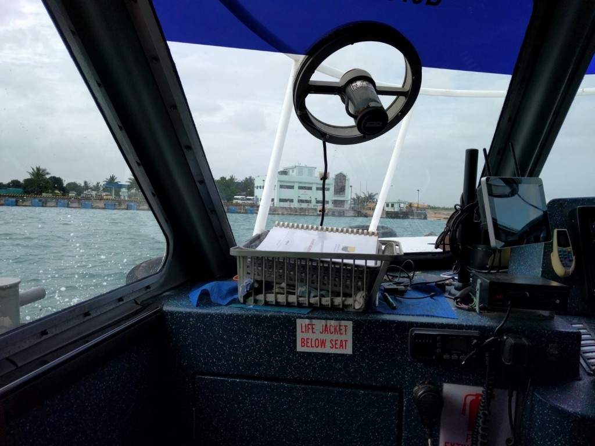
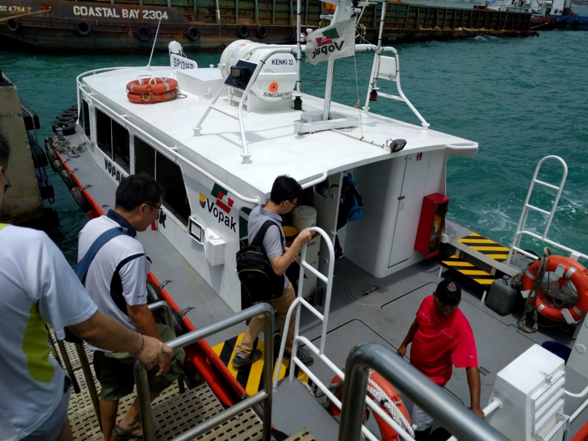

It is not everyday that one is like a tourist in our own country. I went on a trip with my fellow Repair Kopitiam coaches and others for a practically once-in-a-lifetime experience to Pulau Semakau, an island located 8km south of the mainland. It is affectionately known as a landfill island, where our incinerated trash gets sent.
Who would have known the cleanest public area in Singapore is the landfill itself!!! What a revelation! Our guide boasted that there are no cockroaches and other pests cos there is nothing left for them to consume. I also learned that the landfill island is actually a reclaimed combination of the original Pulau Semakau and Pulau Sakeng.
Costing some SG$600 million to reclaim and build in 1990s dollars, it is probably one of the most expensive projects undertaken by the government that are outside of the public eye and concern.
A view of the outside of the main administration building and the bus that will take us on the tour.
Enough talk, here are the pictures I have taken and some description on my part.
At Pasir Panjang Ferry Terminal on a bright Sunday morning.
Waiting for our “ride” which actually turned out to be the white-red boat in the picture.
The 28 of us boarding a ferry. Reminds me of BMT days in NS where recruits board to go to Tekong.
The various container ships that are anchored in the area en-route.
)
The admin building coming into view. The admin building technically lies on the old Pulau Sakeng.
Landfill receiving station for the barge to come in to unload their ashes onto the island.
Full size-shot of the first picture of this post.
Signs that greet you when you step onto the island.
A scale mockup of the island. Each “cell” represents an area of landfill to be filled. Right now, only the largest landfill at the bottom is still available. $400 million of the $600 million total island construction cost went to the building of the surrounding sea wall to enclose the landfill. The road on top of the sea wall probably holds the record for being the most expensive in Singapore to construct.
Beginning of the bus tour. These tanks are used to store rainwater for later use like washing. Otherwise, the island is pretty much self-sustaining with the exception of food and fuel.
The emergency backup waste processing plant should all the incinerators in mainland Singapore be out of commission. This backup has never been used so far.
Entering the landfill receiving station. The barge is pushed into the station by the tugboat you see in the background.
[ ]images/IMG_20160221_113059.jpg)
]images/IMG_20160221_113059.jpg)
A crane unloading the ashes from the barge into the truck. The ashes have been slightly mixed with water to form sludge during the incineration process therefore they will not disperse in the wind. The bus driver opened the door at this point to let us take a quick whiff of the surrounding air. It wasn’t too bad lah.
Even if no trucks are present, the crane operator still unloads to the ground adjacent to the barge. Schedule is tight to unload the barge ASAP so they will empty the barge even if no trucks are available to receive the load.
A fish farm! Apparently this is production-ready with the produce sold to some restaurants already.
Our friendly and funny guide in action. We are now travelling on the most expensive road in Singapore.
All the greenery, stuff you do not expect in a landfill island. Helps to also protect the surface of the landfill.
Mangroves are sensitive to pollution so some are “stationed” just outside the island to act as an indicator of problems. If the mangroves suffer/die, this indicates that landfill materials have leaked out into the open sea alerting the staff to take immediate action.
Mangroves also act as rubbish catchment areas as shown by the plastic bottles trapped in their roots.

Adding topsoil to the top of the landfill to prepare for plants to be grown later.
Hiking trails for those who are inclined.
Spot the highly camouflaged monitor lizard. The proliferation of wildlife on this island proves the relative cleanliness of this area.
A part of the landfill area Cell 3 has been left unfilled as it is used by migratory birds.
“Deep” sea fishing farm just off the coast.
More birds to show the pristine cleanliness of the place.

Raffles Lighthouse in the distance.
A black barrier to prevent toxins in the landfill from leaking into the open sea.
The largest landfill “cell” in Semakau now being filled.
A Measuring Well (MW) drilled into the ground for the staff to monitor conditions of the landfill/water.
A small hut that is run entirely off renewable energy, wind turbines and solar power. The hut is part of an experiment to test the feasibility of using landfilled land for other purposes.
A filled landfill being used as a flat land for government research.
Never forgetting the Singapore flag to mark it as our territory.
The city skyline in the distance.
)
All things must come to an end.
Projected to last up to 2035-2045 since it opened in 1 April 1999, it really drives home the point that the trash we throw away is not out of sight and out of mind. Everything must end up somewhere. The 3Rs, Reduce, Reuse and Recycle are not some dry concepts our schools force down our throats just for the sake of exams. Of course since I’m a coach in Repair Kopitiam, I have to evangelise the 4th R which is Repair.
For those interested, trips to Pulau Semakau are free during Clean and Green Week every November. All other times including this time, we had to pay for our ferry ride there. However be warned that free means crowded.
Finally thanks to Din and Shaggy of Repair Kopitiam/Sustainable Living Lab for organising this eye-opening trip!


{kind=link}
{kind=link}
{kind=link}
{kind=link}
{kind=link}
{kind=link}
{kind=link}
{kind=link}
{kind=link}
{kind=link}
{kind=link}
{kind=link}
{kind=link}
{kind=link}
{kind=link}
{kind=link}
{kind=link}
{kind=link}
{kind=link}
{kind=link}
{kind=link}
{kind=link}
{kind=link}
{kind=link}
{kind=link}
{kind=link}
{kind=link}
{kind=link}
{kind=link}
{kind=link}
{kind=link}
{kind=link}